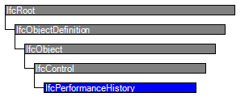

Natural language names
 | Leistungsverlauf |
 | Performance History |
 | Historique de performance |
| Leistungsverlauf |
| Performance History |
| Historique de performance |
| Item | SPF | XML | Change | Description | IFC2x3 to IFC4 |
|---|---|---|---|---|
| IfcPerformanceHistory | ||||
| OwnerHistory | MODIFIED | Instantiation changed to OPTIONAL. | ||
| Identification | MODIFIED | Name changed from LifeCyclePhase to Identification. Type changed from IfcLabel to IfcIdentifier. Instantiation changed to OPTIONAL. | ||
| LifeCyclePhase | ADDED | |||
| PredefinedType | ADDED |
IfcPerformanceHistory is used to document the actual performance of an occurrence instance over time. It includes machine-measured data from building automation systems and human-specified data such as task and resource usage. The data may represent actual conditions, predictions, or simulations.
The realtime data tracked by performance history takes the form of property sets where all properties are based on time series. Unlike design-based data at occurrences and types, performance-driven data is time-sensitive and may change in realtime by some measurement device. Data may be captured at irregular intervals such as when values change beyond established thresholds, or at regular intervals of specified duration.
IfcPerformanceHistory may be declared within a project using IfcRelDeclares where RelatingContext refers to the IfcProject and RelatedDefinitions includes the IfcPerformanceHistory. Default units (used for property sets) are indicated by the declaring project. Only top-level objects are declared; nested performance history objects (through IfcRelNests) do not participate in such relationship.
HISTORY New entity in IFC2x2.
| # | Attribute | Type | Cardinality | Description | C |
|---|---|---|---|---|---|
| 7 | LifeCyclePhase | IfcLabel | [1:1] | Describes the applicable building life-cycle phase. Typical values should be DESIGNDEVELOPMENT, SCHEMATICDEVELOPMENT, CONSTRUCTIONDOCUMENT, CONSTRUCTION, ASBUILT, COMMISSIONING, OPERATION, etc. | X |
| 8 | PredefinedType | IfcPerformanceHistoryTypeEnum | [0:1] | Predefined generic type for a performace history that is specified in an enumeration. | X |

| # | Attribute | Type | Cardinality | Description | C |
|---|---|---|---|---|---|
| IfcRoot | |||||
| 1 | GlobalId | IfcGloballyUniqueId | [1:1] | Assignment of a globally unique identifier within the entire software world. | X |
| 2 | OwnerHistory | IfcOwnerHistory | [0:1] |
Assignment of the information about the current ownership of that object, including owning actor, application, local identification and information captured about the recent changes of the object,
NOTE only the last modification in stored - either as addition, deletion or modification. | X |
| 3 | Name | IfcLabel | [0:1] | Optional name for use by the participating software systems or users. For some subtypes of IfcRoot the insertion of the Name attribute may be required. This would be enforced by a where rule. | X |
| 4 | Description | IfcText | [0:1] | Optional description, provided for exchanging informative comments. | X |
| IfcObjectDefinition | |||||
| HasAssignments | IfcRelAssigns @RelatedObjects | S[0:?] | Reference to the relationship objects, that assign (by an association relationship) other subtypes of IfcObject to this object instance. Examples are the association to products, processes, controls, resources or groups. | X | |
| Nests | IfcRelNests @RelatedObjects | S[0:1] | References to the decomposition relationship being a nesting. It determines that this object definition is a part within an ordered whole/part decomposition relationship. An object occurrence or type can only be part of a single decomposition (to allow hierarchical strutures only). | X | |
| IsNestedBy | IfcRelNests @RelatingObject | S[0:?] | References to the decomposition relationship being a nesting. It determines that this object definition is the whole within an ordered whole/part decomposition relationship. An object or object type can be nested by several other objects (occurrences or types). | X | |
| HasContext | IfcRelDeclares @RelatedDefinitions | S[0:1] | References to the context providing context information such as project unit or representation context. It should only be asserted for the uppermost non-spatial object. | X | |
| IsDecomposedBy | IfcRelAggregates @RelatingObject | S[0:?] | References to the decomposition relationship being an aggregation. It determines that this object definition is whole within an unordered whole/part decomposition relationship. An object definitions can be aggregated by several other objects (occurrences or parts). | X | |
| Decomposes | IfcRelAggregates @RelatedObjects | S[0:1] | References to the decomposition relationship being an aggregation. It determines that this object definition is a part within an unordered whole/part decomposition relationship. An object definitions can only be part of a single decomposition (to allow hierarchical strutures only). | X | |
| HasAssociations | IfcRelAssociates @RelatedObjects | S[0:?] | Reference to the relationship objects, that associates external references or other resource definitions to the object.. Examples are the association to library, documentation or classification. | X | |
| IfcObject | |||||
| 5 | ObjectType | IfcLabel | [0:1] |
The type denotes a particular type that indicates the object further. The use has to be established at the level of instantiable subtypes. In particular it holds the user defined type, if the enumeration of the attribute PredefinedType is set to USERDEFINED.
| X |
| IsDeclaredBy | IfcRelDefinesByObject @RelatedObjects | S[0:1] | Link to the relationship object pointing to the declaring object that provides the object definitions for this object occurrence. The declaring object has to be part of an object type decomposition. The associated IfcObject, or its subtypes, contains the specific information (as part of a type, or style, definition), that is common to all reflected instances of the declaring IfcObject, or its subtypes. | X | |
| Declares | IfcRelDefinesByObject @RelatingObject | S[0:?] | Link to the relationship object pointing to the reflected object(s) that receives the object definitions. The reflected object has to be part of an object occurrence decomposition. The associated IfcObject, or its subtypes, provides the specific information (as part of a type, or style, definition), that is common to all reflected instances of the declaring IfcObject, or its subtypes. | X | |
| IsTypedBy | IfcRelDefinesByType @RelatedObjects | S[0:1] | Set of relationships to the object type that provides the type definitions for this object occurrence. The then associated IfcTypeObject, or its subtypes, contains the specific information (or type, or style), that is common to all instances of IfcObject, or its subtypes, referring to the same type. | X | |
| IsDefinedBy | IfcRelDefinesByProperties @RelatedObjects | S[0:?] | Set of relationships to property set definitions attached to this object. Those statically or dynamically defined properties contain alphanumeric information content that further defines the object. | X | |
| IfcControl | |||||
| 6 | Identification | IfcIdentifier | [0:1] | An identifying designation given to a control It is the identifier at the occurrence level. | X |
| Controls | IfcRelAssignsToControl @RelatingControl | S[0:?] | Reference to the relationship that associates the control to the object(s) being controlled. | X | |
| IfcPerformanceHistory | |||||
| 7 | LifeCyclePhase | IfcLabel | [1:1] | Describes the applicable building life-cycle phase. Typical values should be DESIGNDEVELOPMENT, SCHEMATICDEVELOPMENT, CONSTRUCTIONDOCUMENT, CONSTRUCTION, ASBUILT, COMMISSIONING, OPERATION, etc. | X |
| 8 | PredefinedType | IfcPerformanceHistoryTypeEnum | [0:1] | Predefined generic type for a performace history that is specified in an enumeration. | X |
Property Sets for Performance
The Property Sets for Performance concept applies to this entity.
The property sets relating to this entity are defined by IfcPropertySet and attached by the IfcRelDefinesByProperties relationship. They are accessible by the IsDefinedBy inverse attribute. Applicable property sets are defined at assigned entities (primarily IfcDistributionElement subtypes) where IfcPropertySetTemplate.PropertySetType is PSET_PERFORMANCEDRIVEN.
In addition to standard property sets defined within this specification, if the underlying information source provides metadata (specific type information), then custom property sets may capture such data, where corresponding IfcPropertySetTemplate and IfcPropertyTemplate objects may be defined for such information to be accessed by other applications.
Classification Association
The Classification Association concept applies to this entity.
IfcPerformanceHistory may be classified using IfcRelAssociatesClassification where RelatingClassification refers to an IfcClassificationReference indicating a classification notation. Such classification notation may be used to identify the information such as an address within a building automation system, a work breakdown structure code for tasks, or a cost code for resource allocation.
Aggregation
The Aggregation concept applies to this entity as shown in Table 8.
| ||||
Table 8 — IfcPerformanceHistory Aggregation |
IfcPerformanceHistory may be decomposed into components using IfcRelNests where RelatingObject refers to the enclosing IfcPerformanceHistory and RelatedObjects contains one or more IfcPerformanceHistory components. Composition indicates breakdown of further detail and may correspond to the hierarchy of objects it represents.
Control Assignment
The Control Assignment concept applies to this entity as shown in Table 9.
| ||||||||||
Table 9 — IfcPerformanceHistory Control Assignment |
| # | Concept | Model View |
|---|---|---|
| IfcRoot | ||
| Software Identity | Common Use Definitions | |
| Revision Control | Common Use Definitions | |
| IfcObject | ||
| Object Occurrence Predefined Type | Common Use Definitions | |
| IfcControl | ||
| IfcPerformanceHistory | ||
| Property Sets for Performance | Common Use Definitions | |
| Classification Association | Common Use Definitions | |
| Aggregation | Common Use Definitions | |
| Control Assignment | Common Use Definitions | |
<xs:element name="IfcPerformanceHistory" type="ifc:IfcPerformanceHistory" substitutionGroup="ifc:IfcControl" nillable="true"/>
<xs:complexType name="IfcPerformanceHistory">
<xs:complexContent>
<xs:extension base="ifc:IfcControl">
<xs:attribute name="LifeCyclePhase" type="ifc:IfcLabel" use="optional"/>
<xs:attribute name="PredefinedType" type="ifc:IfcPerformanceHistoryTypeEnum" use="optional"/>
</xs:extension>
</xs:complexContent>
</xs:complexType>
ENTITY IfcPerformanceHistory
SUBTYPE OF (IfcControl);
LifeCyclePhase : IfcLabel;
PredefinedType : OPTIONAL IfcPerformanceHistoryTypeEnum;
END_ENTITY;
 Instance diagram
Instance diagram Link to this page
Link to this page